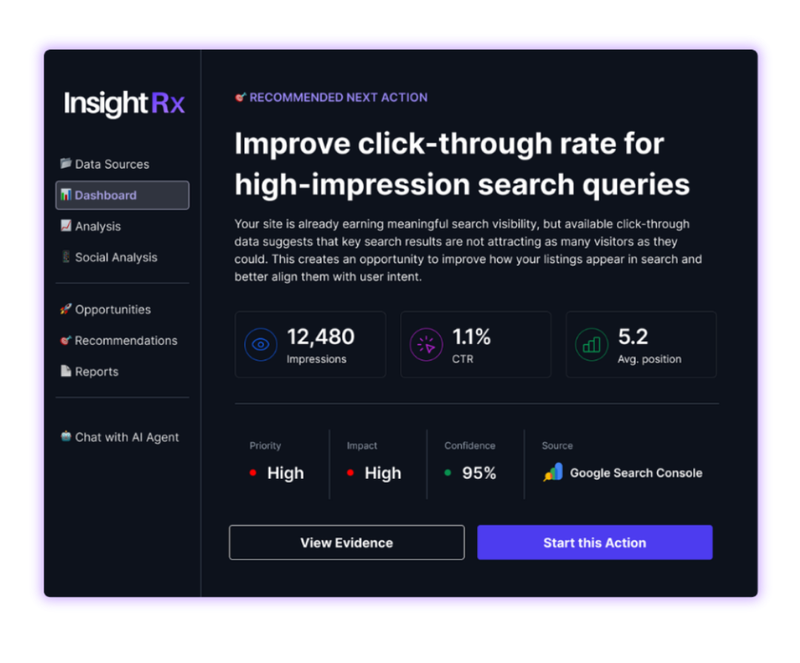
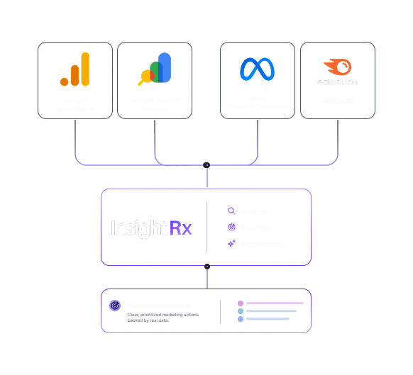

Marketing Intelligence
Powered by Agentic AI
InsightRx is an AI-powered marketing intelligence and decision-support system that transforms structured data from GA4, Google Search Console, SEMrush, and Meta into evidence-backed opportunities, prioritized recommendations, and guided actions.

Marketing data is easier
when you know what matters.
InsightRx helps marketers analyze performance data, identify meaningful opportunities, and turn those findings into clear recommendations and next steps.
From performance data
to a next step you can act on.
Built around the questions
marketers actually ask.
AI recommendations
grounded in evidence.
Less noise.
More useful decisions.
In one representative analysis run, InsightRx reduced nearly 2,000 individual detections into 12 distinct recommendations a marketer could realistically review and act on.
Built as an independent study.
Developed into a working AI system.
InsightRx began as a DePaul University MKT 399 independent study exploring how AI agents could support marketing analysis and decision-making using real marketing performance data.
Explore InsightRx
See how the project moves from problem to product.
Marketing is
moving faster.
Analysis has
to keep up.
Marketing teams are expected to make high-quality decisions across more channels, more data, and shorter timelines. The challenge is no longer accessing information — it is turning that information into a clear, trustworthy next step quickly enough to act on it.
See How InsightRx Helps →| Channel | Spend | Conversions | CPA | Revenue | ROAS | |
|---|---|---|---|---|---|---|
| 1 | Paid Search | $24,500 | 1,120 | $21.88 | $89,600 | 3.7 |
| 2 | Meta Ads | $12,400 | 842 | $14.72 | $38,100 | 3.1 |
| 3 | $8,200 | 310 | $26.45 | $19,400 | 2.4 | |
| 4 | $3,600 | 280 | $12.86 | $16,800 | 4.7 | |
| 5 | Organic | $0 | 1,240 | $0 | $52,300 | — |
Data lives everywhere. Decisions still depend on pulling it together.
The dashboards end where
the hard part begins.
Once the data is available, someone still has to connect the signals, decide what matters, determine whether the evidence is strong enough, and choose the right next step.
The opportunity for AI: shorten the distance between data and a decision without sacrificing accuracy, trust, or human judgment.
See the InsightRx Approach →How InsightRx
Actually Works
InsightRx combines structured marketing data, deterministic analysis, AI agents, recommendation logic, and human review to turn performance data into grounded marketing actions.
Explore the System →
The Tools Behind InsightRx
InsightRx helps marketers analyze performance data, identify meaningful opportunities, and turn those findings into clear recommendations and next steps.

Four Marketing Data Sources.
One Analysis Workflow.
InsightRx analyzes structured marketing-data uploads from Google Analytics, Google Search Console, SEMrush, and Meta. Each source contributes a different view of marketing performance.


One system.
Four ways to explore it.
InsightRx combines structured data, deterministic analysis, specialized AI roles, recommendation logic, and human review. Explore each part of the system to see how marketing data moves from upload to action.
From Marketing Data
to a Recommendation
InsightRx moves uploaded marketing data through a structured decision process. Each stage narrows the information, preserves the supporting evidence, and helps determine which findings are strong enough to become a recommendation.
From Data to Decisions
InsightRx moves uploaded marketing data through a structured decision workflow. Each stage narrows the information, preserves the supporting evidence, and helps determine which findings are strong enough to become a recommendation.
GA4Website analytics
MetaSocial media performance
Learn more about our approach →
Specialized Roles.
One Human-Guided Workflow.
Think of InsightRx less like one chatbot and more like a small marketing team. Each AI role handles a different part of the workflow, while the marketer remains responsible for the final decision.
Future direction: Additional evaluation checkpoints could be introduced between major handoffs.
Not Every Finding
Should Become an Action.
InsightRx separates detecting a performance signal from deciding whether that signal deserves a marketer's attention.
Faster Analysis
Without Blind Trust
InsightRx is designed to increase speed without hiding uncertainty or giving AI unrestricted control over marketing decisions.
SEO. AEO. GEO.
Three Layers. One System.
Modern search visibility has three distinct layers. Most brands optimize only for one. InsightRx analyzes all three simultaneously — identifying exactly where a brand surfaces, where it disappears, and what to do about it.
Live API Connections
Change Everything
How AI Agents
Evaluate Brands
Tomorrow's customers won't always be humans. AI agents are increasingly evaluating, comparing, and recommending brands autonomously.
The Agent Pipeline in Action
Each tab walks through one stage of the InsightRx multi-agent workflow — from raw data intake to a ranked, ready-to-execute action plan.
From Campaign Thinking
to Systems Thinking
Building InsightRx in a production environment changed how I think about marketing, AI, and the intersection of both.
Shifted from “what should I do?” to “how do I architect a system that answers that automatically?” Every strategy now looks like an optimization problem waiting to be built.
Prompts alone are not enough. Production AI requires grounded data, structured outputs, agent orchestration, and evaluation frameworks. Prompts are one component of a larger system.
After auditing real brands against ChatGPT, Perplexity, and AI Overviews, it became clear: brands are already winning and losing in AI-mediated discovery — most don’t know it yet.
The best strategy is only as useful as the system that can execute it. The best pipeline is worthless without real strategic questions. InsightRx forced me to hold both simultaneously.
Getting agents to produce useful output is easy. Getting them grounded in live, clean, normalized data — handling authentication, rate limits, and schema mismatches — is where most AI projects fail.
data_groundingBrands are already winning and losing in AI-mediated discovery — they just don’t know it yet. The window to build early advantage is narrow, and InsightRx is designed to identify it.
aeo_geo_visibilityInsightRx forced me to hold both simultaneously — strategic marketing questions grounding an AI pipeline, an AI pipeline making strategy executable. That intersection is where I want to work.
systems_thinkingInsightRx
Development Roadmap
InsightRx is a working prototype with a clear path to production. Each phase extends the agent architecture, data coverage, and intelligence depth.
Interested in InsightRx?
Let's Connect.
Whether you're a recruiter, a professor, a potential collaborator, or a brand that wants early access — I'd love to hear from you.